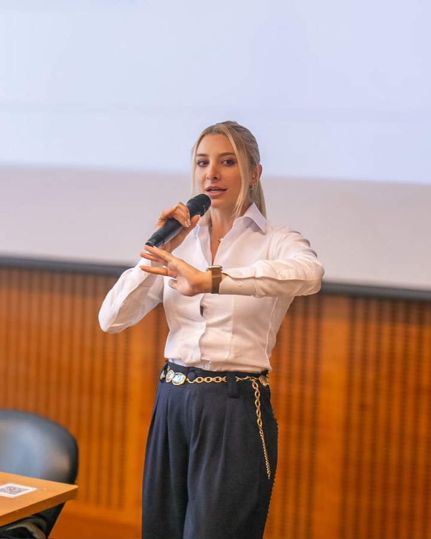
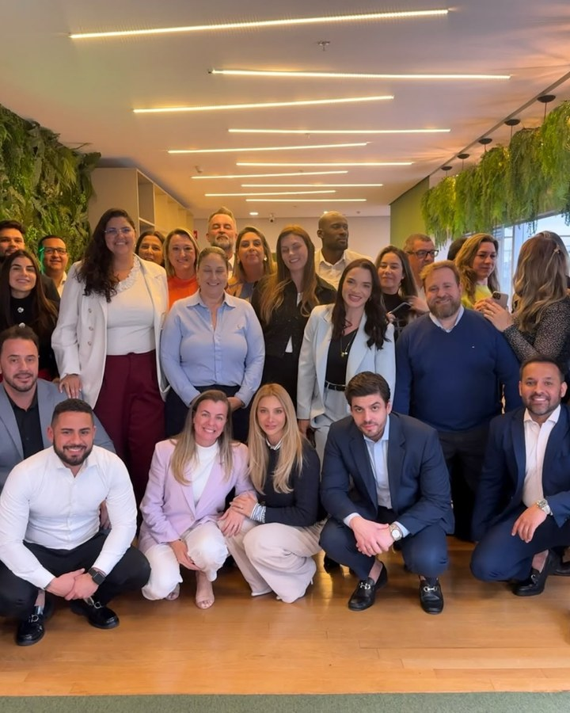

A1 · Autoridade Clássica
Território sóbrio, elegante, seletivo e premium. A paleta de trabalho usa marrom profundo, marfim, champagne e terracota de apoio.
Registro público controlado da direção visual aprovada para a marca pessoal de Uli Zarzana. Este documento apresenta decisões de território e sistema; não substitui o brandbook técnico final.
A marca deve comunicar autoridade vivida, clareza, firmeza, sofisticação e presença humana. O sistema é destinado a profissionais e empresários experientes que buscam reconhecimento, influência e crescimento sustentável.
Território sóbrio, elegante, seletivo e premium. A paleta de trabalho usa marrom profundo, marfim, champagne e terracota de apoio.
Tratamento tipográfico de T1: títulos serifados com presença e textos sans-serif claros, discretos e legíveis.
Assinatura autoral baseada nas iniciais UZ. O conceito ainda precisa ser desenhado em vetor e testado em redução.
Retrato executivo em fundo escuro, com contraste e olhar direto. A fotografia é complementar ao monograma, não substituta dele.
Os quatro tons abaixo são as cores canônicas da identidade A1. Os valores CMYK são referências de conversão para produção; a impressão final deve ser validada no perfil ICC da gráfica.
B1 — Assinatura Executiva combina Libre Baskerville 700 para a assinatura nominal e títulos com Source Sans 3 para textos, legendas e elementos funcionais.
Assinatura principal
Uli Zarzana
Caixa mista, presença firme e proximidade humana.
Título editorial
Capacidade que vira autoridade.
Hierarquia clássica com leitura digital preservada.
O sistema deve ser aplicado com autoridade, clareza e respiro. Estas regras valem para as aplicações atuais e não substituem as regras futuras do selo institucional.
Marrom e marfim sustentam a leitura. Champagne é acento seletivo; terracota é apoio. Não criar cores novas, gradientes ou sombras coloridas.
Libre Baskerville 700 assina e titula. Source Sans 3 informa, legenda e orienta. Caixa alta fica restrita a etiquetas curtas.
Uma ideia principal por peça, hierarquia editorial, respiro amplo e texto afastado das áreas de maior contraste da fotografia.
Retratos executivos, fundo escuro ou neutro, olhar direto e áreas livres para texto. Não cobrir rosto, olhos ou mãos.
Site, redes sociais, apresentações e materiais da mentoria com leitura seletiva, prática e orientada a resultado.
Monograma continua provisório. O selo institucional ainda não recebe regras finais, área de proteção ou tamanho mínimo.
| Elemento | Uso prioritário | Status |
|---|---|---|
| Monograma UZ | Avatar, capa, apresentação e assinatura | Conceito aprovado; vetor pendente |
| Retrato editorial | Perfil, site, capa e peças de autoridade | Direção aprovada; shortlist F1 registrada; derivados oficiais preparados |
| Libre Baskerville 700 | Assinatura nominal, títulos e mensagens de posicionamento | Família e tratamento aprovados |
| Source Sans 3 | Textos, legendas, informações e interface | Família e pesos 400, 500 e 600 aprovados |
A shortlist autorizada foi convertida em uma família de cards editoriais verticais. O padrão combina imagem em tela cheia, gradiente de leitura, etiqueta temática, ícone discreto e mensagem na base.
Clareza para transformar trajetória em reconhecimento profissional.

Uma presença que comunica valor antes mesmo da próxima decisão.
Leitura estratégica para profissionais e empresários experientes.

Um plano de crescimento sem perder direção, identidade ou consistência.
Os quatro quadros abaixo demonstram o uso do sistema A1 + B1 + T1 + F1 em contextos prioritários. São referências de composição e hierarquia, não peças finais de campanha.
Uma ideia principal, uma imagem forte e uma legenda orientada à ação.
Publicação editorial e capa de destaque, com etiqueta curta e leitura imediata.
Uma presença executiva editorial para profissionais e empresários experientes.
conhecer a mentoriaHero de página, com fotografia em escala ampla e texto protegido por contraste.
Hierarquia de palco: mensagem, contexto e presença.
Capa e slide de conteúdo, preservando respiro e distância entre texto e rosto.
Um sistema para transformar trajetória em direção, influência e crescimento sustentável.
Capa de módulo, aula ou material de apoio para profissionais e empresários.
Capas independentes para Instagram e conteúdo social. Referência de produção: 1080 × 1920 px, proporção 9:16.
10. Conteúdo social vertical
Para Reels, Stories e vídeos curtos, o sistema usa uma composição 9:16 com fotografia em tela cheia, gradiente inferior, título curto e destaque em champagne.
A carreira muda quando sua experiência ganha nome.
Uma ideia principal para abrir conversa.
Liderar também é decidir o que não será negociado.
Clareza para profissionais e empresários.
Experiência não precisa pedir licença.
Presença antes da próxima decisão.
Seu próximo passo precisa de direção.
Crescimento profissional e empresarial.